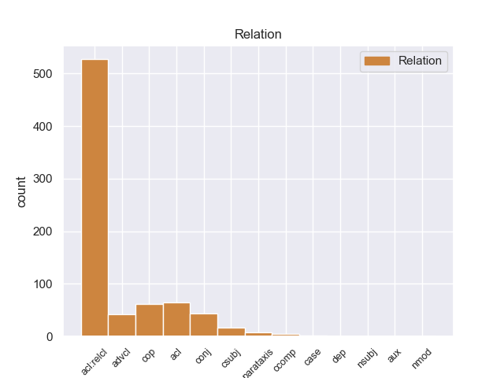
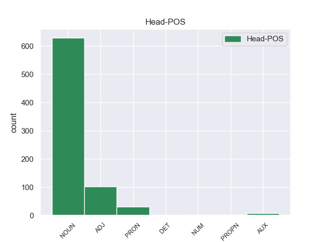
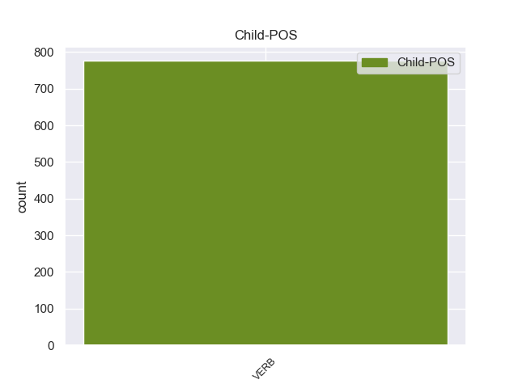

Distribution of features within this leaf



Agreement Rules sorted by frequency.
When the head token is NOUN and the dependent token is VERB.
1 Ευελπιστώ _ _ _ _ 0 _ _ _
2 ότι _ _ _ _ 0 _ _ _
3 η _ _ _ _ 0 _ _ _
4 απόφαση _ _ _ _ 0 _ _ _
5 αυτή _ _ _ _ 0 _ _ _
6 , _ _ _ _ 0 _ _ _
7 συμπεριλαμβανομένης _ _ _ _ 0 _ _ _
8 και _ _ _ _ 0 _ _ _
9 της _ _ _ _ 0 _ _ _
10 αιτιολογικής _ _ _ _ 0 _ _ _
11 έκθεσης έκθεσης NOUN _ Gender=Fem|Number=Sing 0 _ _ _
12 που _ _ _ _ 0 _ _ _
13 την _ _ _ _ 0 _ _ _
14 συνοδεύει συνοδεύειr VERB _ Mood=Ind|Number=Sing|Person=3|Tense=Pres|VerbForm=Fin 11 acl:relcl _ _
15 , _ _ _ _ 0 _ _ _
16 θα _ _ _ _ 0 _ _ _
17 διαβιβαστεί _ _ _ _ 0 _ _ _
18 σ _ _ _ _ 0 _ _ _
19 τις _ _ _ _ 0 _ _ _
20 γαλλικές _ _ _ _ 0 _ _ _
21 αρχές _ _ _ _ 0 _ _ _
22 , _ _ _ _ 0 _ _ _
23 εφόσον _ _ _ _ 0 _ _ _
24 υπερψηφιστεί _ _ _ _ 0 _ _ _
25 από _ _ _ _ 0 _ _ _
26 το _ _ _ _ 0 _ _ _
27 Κοινοβούλιο _ _ _ _ 0 _ _ _
28 . _ _ _ _ 0 _ _ _
When the head token is NOUN and the dependent token is VERB. and the head token is ADJ and the dependent token is VERB.
1 Τα _ _ _ _ 0 _ _ _
2 εγκλήματα _ _ _ _ 0 _ _ _
3 είναι _ _ _ _ 0 _ _ _
4 σοβαρά σοβαo ADJ _ Gender=Fem|Number=Plur 0 _ _ _
5 και _ _ _ _ 0 _ _ _
6 ανήκουν ανήκο VERB _ Mood=Ind|Number=Plur|Person=3|Tense=Pres|VerbForm=Fin 4 conj _ _
7 σε _ _ _ _ 0 _ _ _
8 μια _ _ _ _ 0 _ _ _
9 κατηγορία _ _ _ _ 0 _ _ _
10 για _ _ _ _ 0 _ _ _
11 την _ _ _ _ 0 _ _ _
12 οποία _ _ _ _ 0 _ _ _
13 κανονικά _ _ _ _ 0 _ _ _
14 δεν _ _ _ _ 0 _ _ _
15 προσφέρεται _ _ _ _ 0 _ _ _
16 βουλευτική _ _ _ _ 0 _ _ _
17 ασυλία _ _ _ _ 0 _ _ _
18 , _ _ _ _ 0 _ _ _
19 επειδή _ _ _ _ 0 _ _ _
20 δεν _ _ _ _ 0 _ _ _
21 αφορούν _ _ _ _ 0 _ _ _
22 τις _ _ _ _ 0 _ _ _
23 συνήθεις _ _ _ _ 0 _ _ _
24 και _ _ _ _ 0 _ _ _
25 προσήκουσες _ _ _ _ 0 _ _ _
26 δραστηριότητες _ _ _ _ 0 _ _ _
27 βουλευτή _ _ _ _ 0 _ _ _
28 του _ _ _ _ 0 _ _ _
29 Σώματος _ _ _ _ 0 _ _ _
30 , _ _ _ _ 0 _ _ _
31 ή _ _ _ _ 0 _ _ _
32 πολιτικού _ _ _ _ 0 _ _ _
33 που _ _ _ _ 0 _ _ _
34 δραστηριοποιείται _ _ _ _ 0 _ _ _
35 σε _ _ _ _ 0 _ _ _
36 μια _ _ _ _ 0 _ _ _
37 δημοκρατική _ _ _ _ 0 _ _ _
38 κοινωνία _ _ _ _ 0 _ _ _
39 . _ _ _ _ 0 _ _ _
When the head token is NOUN and the dependent token is VERB. and the head token is ADJ and the dependent token is VERB. and the head token is PRON and the dependent token is VERB.
1 Κύριε _ _ _ _ 0 _ _ _
2 Ύπατε _ _ _ _ 0 _ _ _
3 Εκπρόσωπε _ _ _ _ 0 _ _ _
4 , _ _ _ _ 0 _ _ _
5 επισημάνατε _ _ _ _ 0 _ _ _
6 σήμερα _ _ _ _ 0 _ _ _
7 , _ _ _ _ 0 _ _ _
8 ότι _ _ _ _ 0 _ _ _
9 αυτά αυo PRON _ Gender=Fem|Number=Plur|PronType=Dem 0 _ _ _
10 που _ _ _ _ 0 _ _ _
11 γίνονται γίνοντar VERB _ Mood=Ind|Number=Plur|Person=3|Tense=Pres|VerbForm=Fin 9 acl:relcl _ _
12 εκεί _ _ _ _ 0 _ _ _
13 δεν _ _ _ _ 0 _ _ _
14 είναι _ _ _ _ 0 _ _ _
15 ειρηνευτικές _ _ _ _ 0 _ _ _
16 διαδικασίες _ _ _ _ 0 _ _ _
17 και _ _ _ _ 0 _ _ _
18 σας _ _ _ _ 0 _ _ _
19 δίνω _ _ _ _ 0 _ _ _
20 απόλυτο _ _ _ _ 0 _ _ _
21 δίκιο _ _ _ _ 0 _ _ _
22 . _ _ _ _ 0 _ _ _
When the head token is NOUN and the dependent token is VERB. and the head token is ADJ and the dependent token is VERB. and the head token is PRON and the dependent token is VERB. and the head token is AUX and the dependent token is VERB.
1 Σε _ _ _ _ 0 _ _ _
2 τελευταία _ _ _ _ 0 _ _ _
3 ανάλυση _ _ _ _ 0 _ _ _
4 λοιπόν _ _ _ _ 0 _ _ _
5 το _ _ _ _ 0 _ _ _
6 ζητούμενο _ _ _ _ 0 _ _ _
7 δεν _ _ _ _ 0 _ _ _
8 είναι ίναιer AUX _ Mood=Ind|Number=Sing|Person=3|Tense=Pres|VerbForm=Fin 0 _ _ _
9 να _ _ _ _ 0 _ _ _
10 πούμε _ _ _ _ 0 _ _ _
11 " _ _ _ _ 0 _ _ _
12 ναι _ _ _ _ 0 _ _ _
13 " _ _ _ _ 0 _ _ _
14 σε _ _ _ _ 0 _ _ _
15 κάτι _ _ _ _ 0 _ _ _
16 που _ _ _ _ 0 _ _ _
17 προτείνει _ _ _ _ 0 _ _ _
18 το _ _ _ _ 0 _ _ _
19 Συμβούλιο _ _ _ _ 0 _ _ _
20 , _ _ _ _ 0 _ _ _
21 αντίθετα _ _ _ _ 0 _ _ _
22 , _ _ _ _ 0 _ _ _
23 εμείς _ _ _ _ 0 _ _ _
24 είμαστε είμασ VERB _ Mood=Ind|Number=Sing|Person=1|Tense=Pres|VerbForm=Fin 8 parataxis _ _
25 που _ _ _ _ 0 _ _ _
26 υποβάλλουμε _ _ _ _ 0 _ _ _
27 τις _ _ _ _ 0 _ _ _
28 προτάσεις _ _ _ _ 0 _ _ _
29 και _ _ _ _ 0 _ _ _
30 μετά _ _ _ _ 0 _ _ _
31 από _ _ _ _ 0 _ _ _
32 αυτό _ _ _ _ 0 _ _ _
33 πρέπει _ _ _ _ 0 _ _ _
34 να _ _ _ _ 0 _ _ _
35 καταλήξουμε _ _ _ _ 0 _ _ _
36 σε _ _ _ _ 0 _ _ _
37 κάτι _ _ _ _ 0 _ _ _
38 από _ _ _ _ 0 _ _ _
39 κοινού _ _ _ _ 0 _ _ _
40 με _ _ _ _ 0 _ _ _
41 το _ _ _ _ 0 _ _ _
42 Συμβούλιο _ _ _ _ 0 _ _ _
43 . _ _ _ _ 0 _ _ _
When the head token is NOUN and the dependent token is VERB. and the head token is ADJ and the dependent token is VERB. and the head token is PRON and the dependent token is VERB. and the head token is AUX and the dependent token is VERB. and the head token is NUM and the dependent token is VERB.
1 Delfín _ _ _ _ 0 _ _ _
2 ha _ _ _ _ 0 _ _ _
3 lamentado _ _ _ _ 0 _ _ _
4 que _ _ _ _ 0 _ _ _
5 las _ _ _ _ 0 _ _ _
6 víctimas _ _ _ _ 0 _ _ _
7 mortales _ _ _ _ 0 _ _ _
8 registradas _ _ _ _ 0 _ _ _
9 en _ _ _ _ 0 _ _ _
10 la _ _ _ _ 0 _ _ _
11 red _ _ _ _ 0 _ _ _
12 viaria _ _ _ _ 0 _ _ _
13 de _ _ _ _ 0 _ _ _
14 la _ _ _ _ 0 _ _ _
15 provincia _ _ _ _ 0 _ _ _
16 de _ _ _ _ 0 _ _ _
17 Pontevedra _ _ _ _ 0 _ _ _
18 durante _ _ _ _ 0 _ _ _
19 el _ _ _ _ 0 _ _ _
20 pasado _ _ _ _ 0 _ _ _
21 fin _ _ _ _ 0 _ _ _
22 de _ _ _ _ 0 _ _ _
23 semana _ _ _ _ 0 _ _ _
24 , _ _ _ _ 0 _ _ _
25 sumadas _ _ _ _ 0 _ _ _
26 a _ _ _ _ 0 _ _ _
27 las _ _ _ _ 0 _ _ _
28 tres tres NUM _ Number=Plur|NumType=Card 0 _ _ _
29 registradas registrado VERB _ Gender=Fem|Number=Plur|VerbForm=Part 28 acl _ _
30 en _ _ _ _ 0 _ _ _
31 el _ _ _ _ 0 _ _ _
32 siniestro _ _ _ _ 0 _ _ _
33 de _ _ _ _ 0 _ _ _
34 este _ _ _ _ 0 _ _ _
35 martes _ _ _ _ 0 _ _ _
36 , _ _ _ _ 0 _ _ _
37 " _ _ _ _ 0 _ _ _
38 evidentemente _ _ _ _ 0 _ _ _
39 son _ _ _ _ 0 _ _ _
40 noticias _ _ _ _ 0 _ _ _
41 trágicas _ _ _ _ 0 _ _ _
42 , _ _ _ _ 0 _ _ _
43 dolorosas _ _ _ _ 0 _ _ _
44 , _ _ _ _ 0 _ _ _
45 que _ _ _ _ 0 _ _ _
46 se _ _ _ _ 0 _ _ _
47 deben _ _ _ _ 0 _ _ _
48 lamentar _ _ _ _ 0 _ _ _
49 y _ _ _ _ 0 _ _ _
50 apoyar _ _ _ _ 0 _ _ _
51 a _ _ _ _ 0 _ _ _
52 las _ _ _ _ 0 _ _ _
53 familias _ _ _ _ 0 _ _ _
54 " _ _ _ _ 0 _ _ _
55 . _ _ _ _ 0 _ _ _
When the head token is NOUN and the dependent token is VERB. and the head token is ADJ and the dependent token is VERB. and the head token is PRON and the dependent token is VERB. and the head token is AUX and the dependent token is VERB. and the head token is NUM and the dependent token is VERB. and the head token is PROPN and the dependent token is VERB.
1 Έτσι _ _ _ _ 0 _ _ _
2 συγκροτήθηκε _ _ _ _ 0 _ _ _
3 ένα _ _ _ _ 0 _ _ _
4 αυτόνομο _ _ _ _ 0 _ _ _
5 κράτος _ _ _ _ 0 _ _ _
6 , _ _ _ _ 0 _ _ _
7 υποτελές _ _ _ _ 0 _ _ _
8 σ _ _ _ _ 0 _ _ _
9 το _ _ _ _ 0 _ _ _
10 Οθωμανικό _ _ _ _ 0 _ _ _
11 κράτος _ _ _ _ 0 _ _ _
12 , _ _ _ _ 0 _ _ _
13 σ _ _ _ _ 0 _ _ _
14 τη _ _ _ _ 0 _ _ _
15 διακυβέρνηση _ _ _ _ 0 _ _ _
16 του _ _ _ _ 0 _ _ _
17 οποίου _ _ _ _ 0 _ _ _
18 συμμετείχαν συμμετείχ VERB _ Mood=Ind|Number=Plur|Person=3|Tense=Past|VerbForm=Fin 19 acl:relcl _ _
19 Έλληνες έλληνε PROPN _ Gender=Masc|Number=Plur 0 _ _ _
20 , _ _ _ _ 0 _ _ _
21 Βούλγαροι _ _ _ _ 0 _ _ _
22 , _ _ _ _ 0 _ _ _
23 Τούρκοι _ _ _ _ 0 _ _ _
24 , _ _ _ _ 0 _ _ _
25 καθώς _ _ _ _ 0 _ _ _
26 και _ _ _ _ 0 _ _ _
27 Εβραίοι _ _ _ _ 0 _ _ _
28 οι _ _ _ _ 0 _ _ _
29 οποίοι _ _ _ _ 0 _ _ _
30 είχαν _ _ _ _ 0 _ _ _
31 δημιουργήσει _ _ _ _ 0 _ _ _
32 μια _ _ _ _ 0 _ _ _
33 σημαντική _ _ _ _ 0 _ _ _
34 παροικία _ _ _ _ 0 _ _ _
35 σ _ _ _ _ 0 _ _ _
36 τη _ _ _ _ 0 _ _ _
37 Θεσσαλονίκη _ _ _ _ 0 _ _ _
38 . _ _ _ _ 0 _ _ _
When the head token is NOUN and the dependent token is VERB. and the head token is ADJ and the dependent token is VERB. and the head token is PRON and the dependent token is VERB. and the head token is AUX and the dependent token is VERB. and the head token is NUM and the dependent token is VERB. and the head token is PROPN and the dependent token is VERB. and the head token is DET and the dependent token is VERB.
1 El _ _ _ _ 0 _ _ _
2 ilustrísimo _ _ _ _ 0 _ _ _
3 i _ _ _ _ 0 _ _ _
4 su _ _ _ _ 0 _ _ _
5 comitiva _ _ _ _ 0 _ _ _
6 se _ _ _ _ 0 _ _ _
7 hallaban _ _ _ _ 0 _ _ _
8 a _ _ _ _ 0 _ _ _
9 distancia _ _ _ _ 0 _ _ _
10 de _ _ _ _ 0 _ _ _
11 más _ _ _ _ 0 _ _ _
12 de _ _ _ _ 0 _ _ _
13 trescientas _ _ _ _ 0 _ _ _
14 toesas _ _ _ _ 0 _ _ _
15 de _ _ _ _ 0 _ _ _
16 el _ _ _ _ 0 _ _ _
17 alojamiento _ _ _ _ 0 _ _ _
18 , _ _ _ _ 0 _ _ _
19 caminando _ _ _ _ 0 _ _ _
20 hacia _ _ _ _ 0 _ _ _
21 él _ _ _ _ 0 _ _ _
22 , _ _ _ _ 0 _ _ _
23 cuando _ _ _ _ 0 _ _ _
24 Analican _ _ _ _ 0 _ _ _
25 se _ _ _ _ 0 _ _ _
26 presentó _ _ _ _ 0 _ _ _
27 a _ _ _ _ 0 _ _ _
28 la _ _ _ _ 0 _ _ _
29 vista _ _ _ _ 0 _ _ _
30 , _ _ _ _ 0 _ _ _
31 i _ _ _ _ 0 _ _ _
32 tuvieron _ _ _ _ 0 _ _ _
33 tiempo _ _ _ _ 0 _ _ _
34 para _ _ _ _ 0 _ _ _
35 volver _ _ _ _ 0 _ _ _
36 las _ _ _ _ 0 _ _ _
37 herraduras _ _ _ _ 0 _ _ _
38 , _ _ _ _ 0 _ _ _
39 i _ _ _ _ 0 _ _ _
40 salvar _ _ _ _ 0 _ _ _
41 sus _ _ _ _ 0 _ _ _
42 personas _ _ _ _ 0 _ _ _
43 , _ _ _ _ 0 _ _ _
44 a _ _ _ _ 0 _ _ _
45 que _ _ _ _ 0 _ _ _
46 les _ _ _ _ 0 _ _ _
47 dio _ _ _ _ 0 _ _ _
48 lugar _ _ _ _ 0 _ _ _
49 la _ _ _ _ 0 _ _ _
50 codicia _ _ _ _ 0 _ _ _
51 de _ _ _ _ 0 _ _ _
52 los _ _ _ _ 0 _ _ _
53 insurgentes _ _ _ _ 0 _ _ _
54 , _ _ _ _ 0 _ _ _
55 que _ _ _ _ 0 _ _ _
56 cada _ _ _ _ 0 _ _ _
57 uno _ _ _ _ 0 _ _ _
58 se _ _ _ _ 0 _ _ _
59 empezaba _ _ _ _ 0 _ _ _
60 en _ _ _ _ 0 _ _ _
61 hacer _ _ _ _ 0 _ _ _
62 presa _ _ _ _ 0 _ _ _
63 , _ _ _ _ 0 _ _ _
64 porque _ _ _ _ 0 _ _ _
65 el el DET _ Definite=Def|Gender=Masc|Number=Sing|PronType=Art 0 _ _ _
66 que _ _ _ _ 0 _ _ _
67 no _ _ _ _ 0 _ _ _
68 la _ _ _ _ 0 _ _ _
69 hace hacer VERB _ Mood=Ind|Number=Sing|Person=3|Tense=Pres|VerbForm=Fin 65 acl:relcl _ _
70 vuelve _ _ _ _ 0 _ _ _
71 a _ _ _ _ 0 _ _ _
72 su _ _ _ _ 0 _ _ _
73 casa _ _ _ _ 0 _ _ _
74 con _ _ _ _ 0 _ _ _
75 las _ _ _ _ 0 _ _ _
76 manos _ _ _ _ 0 _ _ _
77 vacías _ _ _ _ 0 _ _ _
78 , _ _ _ _ 0 _ _ _
79 i _ _ _ _ 0 _ _ _
80 por _ _ _ _ 0 _ _ _
81 eso _ _ _ _ 0 _ _ _
82 descuidaron _ _ _ _ 0 _ _ _
83 de _ _ _ _ 0 _ _ _
84 las _ _ _ _ 0 _ _ _
85 personas _ _ _ _ 0 _ _ _
86 . _ _ _ _ 0 _ _ _
Disagree Examples:
1 Como _ _ _ _ 0 _ _ _
2 no _ _ _ _ 0 _ _ _
3 existen existir VERB _ Mood=Ind|Number=Plur|Person=3|Tense=Pres|VerbForm=Fin 10 advcl _ _
4 asentamientos _ _ _ _ 0 _ _ _
5 permanentes _ _ _ _ 0 _ _ _
6 , _ _ _ _ 0 _ _ _
7 también _ _ _ _ 0 _ _ _
8 es _ _ _ _ 0 _ _ _
9 la _ _ _ _ 0 _ _ _
10 isla isla NOUN _ Gender=Fem|Number=Sing 0 _ _ _
11 deshabitada _ _ _ _ 0 _ _ _
12 mayor _ _ _ _ 0 _ _ _
13 de _ _ _ _ 0 _ _ _
14 el _ _ _ _ 0 _ _ _
15 hemisferio _ _ _ _ 0 _ _ _
16 norte _ _ _ _ 0 _ _ _
17 a _ _ _ _ 0 _ _ _
18 el _ _ _ _ 0 _ _ _
19 sur _ _ _ _ 0 _ _ _
20 de _ _ _ _ 0 _ _ _
21 el _ _ _ _ 0 _ _ _
22 Círculo _ _ _ _ 0 _ _ _
23 Polar _ _ _ _ 0 _ _ _
24 Ártico _ _ _ _ 0 _ _ _
25 . _ _ _ _ 0 _ _ _
1 Maese _ _ _ _ 0 _ _ _
2 Nicless _ _ _ _ 0 _ _ _
3 , _ _ _ _ 0 _ _ _
4 dueño _ _ _ _ 0 _ _ _
5 de _ _ _ _ 0 _ _ _
6 la _ _ _ _ 0 _ _ _
7 posada _ _ _ _ 0 _ _ _
8 , _ _ _ _ 0 _ _ _
9 se _ _ _ _ 0 _ _ _
10 piensa _ _ _ _ 0 _ _ _
11 librado _ _ _ _ 0 _ _ _
12 de _ _ _ _ 0 _ _ _
13 sus _ _ _ _ 0 _ _ _
14 huéspedes _ _ _ _ 0 _ _ _
15 , _ _ _ _ 0 _ _ _
16 pero _ _ _ _ 0 _ _ _
17 el _ _ _ _ 0 _ _ _
18 justicier _ _ _ _ 0 _ _ _
19 - _ _ _ _ 0 _ _ _
20 quórum _ _ _ _ 0 _ _ _
21 lo _ _ _ _ 0 _ _ _
22 detiene _ _ _ _ 0 _ _ _
23 también _ _ _ _ 0 _ _ _
24 y _ _ _ _ 0 _ _ _
25 clausura _ _ _ _ 0 _ _ _
26 la _ _ _ _ 0 _ _ _
27 posada _ _ _ _ 0 _ _ _
28 , _ _ _ _ 0 _ _ _
29 a _ _ _ _ 0 _ _ _
30 la _ _ _ _ 0 _ _ _
31 vez vez NOUN _ Gender=Fem|Number=Sing 0 _ _ _
32 que _ _ _ _ 0 _ _ _
33 desalojan desalojar VERB _ Mood=Ind|Number=Plur|Person=3|Tense=Pres|VerbForm=Fin 31 acl:relcl _ _
34 el _ _ _ _ 0 _ _ _
35 Tarrinzean _ _ _ _ 0 _ _ _
36 - _ _ _ _ 0 _ _ _
37 field _ _ _ _ 0 _ _ _
38 de _ _ _ _ 0 _ _ _
39 todos _ _ _ _ 0 _ _ _
40 los _ _ _ _ 0 _ _ _
41 saltimbanquis _ _ _ _ 0 _ _ _
42 y _ _ _ _ 0 _ _ _
43 charlatanes _ _ _ _ 0 _ _ _
44 ahí _ _ _ _ 0 _ _ _
45 apostados _ _ _ _ 0 _ _ _
46 . _ _ _ _ 0 _ _ _
1 Después _ _ _ _ 0 _ _ _
2 de _ _ _ _ 0 _ _ _
3 pasar _ _ _ _ 0 _ _ _
4 un _ _ _ _ 0 _ _ _
5 año _ _ _ _ 0 _ _ _
6 allí _ _ _ _ 0 _ _ _
7 , _ _ _ _ 0 _ _ _
8 hizo _ _ _ _ 0 _ _ _
9 lo él PRON _ Case=Acc|Gender=Masc|Number=Sing|Person=3|PrepCase=Npr|PronType=Prs 0 _ _ _
10 que _ _ _ _ 0 _ _ _
11 la _ _ _ _ 0 _ _ _
12 mayoría _ _ _ _ 0 _ _ _
13 de _ _ _ _ 0 _ _ _
14 los _ _ _ _ 0 _ _ _
15 jóvenes _ _ _ _ 0 _ _ _
16 de _ _ _ _ 0 _ _ _
17 el _ _ _ _ 0 _ _ _
18 Paris _ _ _ _ 0 _ _ _
19 FC _ _ _ _ 0 _ _ _
20 suelen soler VERB _ Mood=Ind|Number=Plur|Person=3|Tense=Pres|VerbForm=Fin 9 acl:relcl _ _
21 hacer _ _ _ _ 0 _ _ _
22 y _ _ _ _ 0 _ _ _
23 se _ _ _ _ 0 _ _ _
24 unió _ _ _ _ 0 _ _ _
25 a _ _ _ _ 0 _ _ _
26 el _ _ _ _ 0 _ _ _
27 París _ _ _ _ 0 _ _ _
28 - _ _ _ _ 0 _ _ _
29 Saint _ _ _ _ 0 _ _ _
30 Germain _ _ _ _ 0 _ _ _
31 . _ _ _ _ 0 _ _ _
1 Aunque _ _ _ _ 0 _ _ _
2 tengan _ _ _ _ 0 _ _ _
3 un _ _ _ _ 0 _ _ _
4 montón _ _ _ _ 0 _ _ _
5 de _ _ _ _ 0 _ _ _
6 pájaros _ _ _ _ 0 _ _ _
7 de _ _ _ _ 0 _ _ _
8 todo _ _ _ _ 0 _ _ _
9 tipo _ _ _ _ 0 _ _ _
10 también _ _ _ _ 0 _ _ _
11 tiene _ _ _ _ 0 _ _ _
12 cualquier _ _ _ _ 0 _ _ _
13 tipo tipo NOUN _ Gender=Masc|Number=Sing 0 _ _ _
14 de _ _ _ _ 0 _ _ _
15 peces _ _ _ _ 0 _ _ _
16 que _ _ _ _ 0 _ _ _
17 busqueis busqueis VERB _ Number=Plur|VerbForm=Fin 13 acl:relcl _ SpaceAfter=No
18 , _ _ _ _ 0 _ _ _
19 la _ _ _ _ 0 _ _ _
20 dueña _ _ _ _ 0 _ _ _
21 es _ _ _ _ 0 _ _ _
22 muy _ _ _ _ 0 _ _ _
23 simpática _ _ _ _ 0 _ _ _
24 y _ _ _ _ 0 _ _ _
25 te _ _ _ _ 0 _ _ _
26 aconseja _ _ _ _ 0 _ _ _
27 , _ _ _ _ 0 _ _ _
28 no _ _ _ _ 0 _ _ _
29 como _ _ _ _ 0 _ _ _
30 los _ _ _ _ 0 _ _ _
31 chupasangres _ _ _ _ 0 _ _ _
32 de _ _ _ _ 0 _ _ _
33 tu _ _ _ _ 0 _ _ _
34 mascota _ _ _ _ 0 _ _ _
35 que _ _ _ _ 0 _ _ _
36 no _ _ _ _ 0 _ _ _
37 tienen _ _ _ _ 0 _ _ _
38 ni _ _ _ _ 0 _ _ _
39 idea _ _ _ _ 0 _ _ _
40 y _ _ _ _ 0 _ _ _
41 encima _ _ _ _ 0 _ _ _
42 te _ _ _ _ 0 _ _ _
43 la _ _ _ _ 0 _ _ _
44 intentan _ _ _ _ 0 _ _ _
45 clavar _ _ _ _ 0 _ _ _
46 . _ _ _ _ 0 _ _ _
1 En _ _ _ _ 0 _ _ _
2 el _ _ _ _ 0 _ _ _
3 pasado _ _ _ _ 0 _ _ _
4 se _ _ _ _ 0 _ _ _
5 produjo _ _ _ _ 0 _ _ _
6 un _ _ _ _ 0 _ _ _
7 hundimiento _ _ _ _ 0 _ _ _
8 de _ _ _ _ 0 _ _ _
9 el _ _ _ _ 0 _ _ _
10 territorio _ _ _ _ 0 _ _ _
11 provocado _ _ _ _ 0 _ _ _
12 por _ _ _ _ 0 _ _ _
13 el _ _ _ _ 0 _ _ _
14 encuentro _ _ _ _ 0 _ _ _
15 , _ _ _ _ 0 _ _ _
16 frente _ _ _ _ 0 _ _ _
17 a _ _ _ _ 0 _ _ _
18 la _ _ _ _ 0 _ _ _
19 península _ _ _ _ 0 _ _ _
20 de _ _ _ _ 0 _ _ _
21 Taitao _ _ _ _ 0 _ _ _
22 , _ _ _ _ 0 _ _ _
23 de _ _ _ _ 0 _ _ _
24 tres _ _ _ _ 0 _ _ _
25 placas _ _ _ _ 0 _ _ _
26 tectónicas _ _ _ _ 0 _ _ _
27 : _ _ _ _ 0 _ _ _
28 la él PRON _ Case=Acc|Gender=Fem|Number=Sing|Person=3|PrepCase=Npr|PronType=Prs 0 _ _ _
29 de _ _ _ _ 0 _ _ _
30 Nazca _ _ _ _ 0 _ _ _
31 y _ _ _ _ 0 _ _ _
32 la _ _ _ _ 0 _ _ _
33 Antártica _ _ _ _ 0 _ _ _
34 que _ _ _ _ 0 _ _ _
35 se _ _ _ _ 0 _ _ _
36 mueven mover VERB _ Mood=Ind|Number=Plur|Person=3|Tense=Pres|VerbForm=Fin 28 acl:relcl _ _
37 hacia _ _ _ _ 0 _ _ _
38 el _ _ _ _ 0 _ _ _
39 este _ _ _ _ 0 _ _ _
40 , _ _ _ _ 0 _ _ _
41 y _ _ _ _ 0 _ _ _
42 la _ _ _ _ 0 _ _ _
43 Sudamericana _ _ _ _ 0 _ _ _
44 que _ _ _ _ 0 _ _ _
45 se _ _ _ _ 0 _ _ _
46 desplaza _ _ _ _ 0 _ _ _
47 hacia _ _ _ _ 0 _ _ _
48 el _ _ _ _ 0 _ _ _
49 oeste _ _ _ _ 0 _ _ _
50 . _ _ _ _ 0 _ _ _